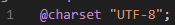

Há várias formas de utilizar cores para html com css. A primeira e mais básica é pelo nome das cores
A segunda forma é pelo código Hexadecimal de cada cor.
A terceira é pelo código hsl (hue, saturation, luminsity) de cada cor
A última e mais prática é pelo menu de cores do visual studio, que oferece formatação nos códigos anteriores
Na linguagem css, gradientes podem ser inseridos (inline, internal ou external) por meio da tag background-image, definindo o bg como linear-gradient, dando entre parenteses uma direçao ou angulo, cores na ordem e porcentagem do espaço ocupado pelas cores. Veja o exemplo na Página gradiente
Repare que no código da página gradiente, além de definir o gradiente, foi necessário definir um seletor '*' com height: 100%, para que o gradiente ocupasse o total da página. Podemos inserir também uma fixação de background com background-attachment:fixed, ainda dentro do seletor body, para que ele nao role.
É possível editar diversos atributos de uma fonte através de css. Vamos analisar os principais atributos.
font-style: Recebe valores, como italic
font-weight: Define light, bold, bolder, normal
font-size: recebe de preferencia um valor em 'em' onde 1em é o tamanho padrão da fonte
font-family: Define uma ordem de tentativas de fontes padrão. Possível usar termos gerais como serif ou sans-serif.
Alternativamente, podemos usar o shorthand:
font: normal light 3em Arial, Helvetica, sans-serif;
Repare que no exemplo de shorthand, os valores dos atributos não são separados por vírgula. As fonte por sua vez, são.
Além dos exemplos acima ainda é possível usar o atributo font-decoration para sobre ou sublinhar, riscar ou tracejar fontes.
É possível trebalhar com fontes externas, que tenham sido baixadas e armazenadas nos formatos (geralmente) otf e/ou ttf. Para isso, é necessário criar uma regra @font-face no arquivo css ou na tag style, possuindo a url dos ARQUIVOS OTF e TTF e definindo um formato ('truetype ou opentype') um nome para ser usado como font family. É interessante setar o weight e style como normal dentro da regra.
url e o format (dentro do src: devem ir com ("")).
Note que foi adicionado um sans serif inline, caso o potato não carregue.
O texto pode ser alinhado a left right center ou justify adicionando um parametro text align dentro do seletor a ser alinhado, na folha de estilo. É possível usar o text indent para adicionar espaçamento de parágrafo.
Existem 4 tipos de seletores personalizados nas CSS. o id, o class, as pseudo classes e os pseudo elementos.
Ao inserir, dentro de uma tag, a propriedade id="nome", podemos separá-la das demais tags semelhantes ao estilizar no css. basta utilizar #nome ou h1#nome por exemplo como seletor, e definir as características que queremos que sejam diferentes. Na ausência de especificações, a estilização geral da tag comanda o resultado
A primeira imagem mostra a delimitação de um id no código HTML, enquanto a segunda mostra um seletor com referencia a esse id no código CSS
Ao contrário das ids, podemos usar a mesma class em diversas tags/elementos, para agrupá-los em suas configurações no CSS. Neste caso, adicionamos a propriedade class="nome" nas tags que queremos classificar e no CSS usamos .nome como seletor para configurar todos os elementos da classe.
Vale lembrar que um elemento pode pertencer a mais de uma class, com configurações de estilo distintas.
Note que nas duas primeiras imagens classificamos elementos diferentes na mesma class no código html, e na terceira usamos .intermediário para configurar ambas de uma vez.
Uma pseudoclasse é um seletor de estilo (demarcado por :) que busca configurar um elemento, tag, classe ou id em um estado específico. Aprendemos até agora 3 pseudo classes diferentes:
Trabalhamos em html e css com um modelo de caixas, que abriga o conteúdo dentro das mesmas. Caixas possuem vários elementos internos e podem ser aninhadas dentro de outras caixas indeterminadamente.
Os dois tipos de caixas são:
Parágrafos e h1 são exemplos de box level, enquanto uma âncora 'a' é um exemplo de inline level.
Caixas possuem, de dentro para fora, conteúdo, padding, border e margin.
Usando o DevTools do chrome, é possível visualizar e brincar com essas configurações sem alterar o código fonte.
PROPRIEDADES -
MARGIN: As principais Propriedades de Estilo para margin são:
" margin-top " (margin da parte de cima de um elemento),
" margin-right " (parte direita),
" margin-bottom " (parte de baixo) e
" margin-left " (parte esquerda)
- O valor dessas propriedades geralmente é inserido em px.
Nota: Para centralizar um elemento (CAIXA) na tela, de forma automática , devemos usar a Propriedade de Estilo " margin " com o valor " auto ". Isso fará com que elementos (caixas) sejam centralizados horizontalmente de forma automática, mesmo que o tamanho da tela mude.
Como no "padding", também existe um SENTIDO/ORDEM correta PARA INSERIR as propriedades de margin descritas logo acima. A "direção" correta é:
Podemos agrupar as tags usando classes e ids para mais fácil configuração no css.
Certos comandos, chamados de regras, precisam ser colocados no início de documentos css com um @. O maior exemplo é o charset, mas isso também se aplica, por exemplo, a importação de fontes do google fonts. Nesse caso, a própria plataforma oferta o código a ser colado.
As id="nome" em HTML são referenciadas com #nome em CSS.
As class="nome" em HTML são referenciadas com .nome em CSS.